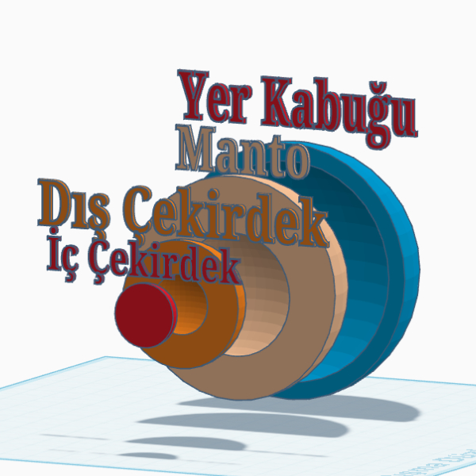

Dünyanın Merkezine Yolculuk
3D Modelleme ile Yer Kürenin Katmanları

Modele gitmek için resmin üzerine tıklayınız.
Görevin Nedir?
Bugün bir "Jeoloji Uzmanı" ve "3D Tasarımcı" rolündesin. Görevin; üzerinde yaşadığımız Dünya'nın iç yapısını sadece kitaplardan okumak yerine, katman katman bizzat inşa ederek 3D modelini oluşturmak ve somut bir ürün haline getirmektir.
Adım Adım Uygulama Rehberi
Giriş: Çekirdeği Oluştur
Tinkercad'i aç ve çalışma düzlemine bir "Küre" ekle. Bu küre Dünyanın en sıcak yeri olan İç Çekirdek olacak. Onu parlak bir sarı renge boya.
Keşfetme: Katmanları İnşa Et
İç çekirdeğin etrafına daha büyük bir küre ekleyerek Dış Çekirdek ve
Manto katmanlarını oluştur. Her katman için farklı renkler (Turuncu,
Kırmızı, Kahverengi) kullan.
İpucu: "Delik" ve "Gruplandır" özelliklerini
kullan.
Açıklama: Yer Kabuğu
En dışa ince bir tabaka olarak Yer Kabuğu'nu ekle. Mantonun kalınlığına kıyasla yer kabuğunun inceliğine dikkat etmelisin.
Derinleştirme: Kesit Al
Tasarım bittikten sonra bir "Kutu" kullanarak modelinin çeyrek kısmını kesip çıkar. Böylece içteki tüm katmanların (çekirdekten kabuğa) nasıl göründüğünü sergileyebilirsin.
Kritik Düşünce Sorusu
Tasarladığın modelde Yer Kabuğu neden diğer katmanlardan çok daha ince? Eğer yer kabuğu daha kalın olsaydı, volkanik faaliyetler bu durumdan nasıl etkilenirdi?
Başarı Kriterleri
- Katmanlar eksiksiz ve doğru sıralamada mı?
- Renk seçimi sıcaklık ve yapıyı yansıtıyor mu?
- Model, 3D yazıcıdan basılmaya uygun mu?